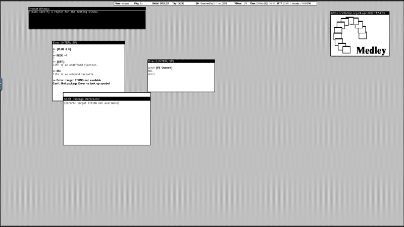

This section contains information on installing or setting up Medley and using it.
There are two main ways of running Medley: accessing it online in a web browser or installing and running the system on your computer. Online access is best for trying out Medley without installing anything, as well as for basic usage. Install the system on your computer if you want to run Medley offline, customize the environment, or simplify the exchange of files with Medley.
We are working on making an early version of Medley run in the browser. This example of software preservation will let you access a technology artifact of historical significance.
These are the available options for running Medley:
Access Medley Online: how to access Medley running on our servers using your web browser.
Install and Run: how to set Medley up on your computer, and restart each time.
Using Medley: Once you are up and running, some basics and pointers to other documentation.
Running Interlisp online is good for experimenting and introducing yourself to the environment. However, anything you create in the online environment should be treated as transient. If you’re interested in developing and experimenting with Lisp programs, you will want to investigate other options. For a first foray, it is a good starting point.
Things to note when running online
Browser compatibility: Older browsers may not support the VNC software we use; it should give you a warning if this is detected.
control-character conflicts: Different browsers may intercept user typing control-characters; for example, control-W might close the entire Medley window, rather than backward-delete a word. There is no standard fix: Using Chrome in “full screen” mode; using a browser extension which captures the control-character for its own operations might help.
No guarantees: In general, Medley has NO WARRANTY, but in particular we make no guarantees that private information will not be revealed, or that your files uploaded to your account will be held securely.
Reliable Internet: You need a solid net connection to our AWS server (currently in Ohio).
You can login as a guest by clicking on the login screen. However, guest sessions are not saved.
or
We suggest you create your own account by clicking on the login screen. Having an account enables you to save your sessions. To create an account, you just need an email address and password. Click Register here on the login screen to create your own account.
or
If you are already registered (created an account), log in and start a Medley Interlisp session. Sessions are preserved for users that login with their own account. However, user account sessions may be deleted after 30 days of inactivity.
Select the Exec you want to run. For this exercise, select Interlisp
Leave the Fill browser window option set.
Select Run Medley.
Your browser will open a window that represents the Interlisp Desktop and looks much like this:

Medley Interlisp
The Interlisp Desktop at startup contains 4 windows of interest:
Prompt Window: The black window at the top of the screen. It is used to display system or application prompts
Exec (INTERLISP) window: The main window where you run functions and develop programs.
Medley logo window: A window containing the Interlisp Medley logo as a bit map.
Status Bar window
Writing a sample Interlisp programs
In the Exec window, type the following:
(PLUS11)
When you complete typing the ending ) the Interlisp interpreter will perform the calculation and return the result.
One thing you probably noticed, the command PLUS is capitalized. It’s not that the developers of Interlisp were always shouting at each other. Rather, when Interlisp was developed computer programming was in its infancy and standards for naming commands were still evolving.
(What is a memory image? How is it different from an image or memory?)
In Interlisp, there are two types of files relevant to managing memory images and updating them across sessions: lisp.virtualmem and .sysout.
The lisp.virtualmem file is a capture of the “current” state of the system (i.e., it is a copy of the virtual memory at a point in time). lisp.virtualmem is written whenever you execute (IL:LOGOUT) and also whenever executing (IL:SAVEVM). You can restart Medley using a lisp.virtualmem and it will pick up essentially where it left off before the LOGOUT or SAVEVM (with the exception that the user can set BEFORE/AFTER and LOGOUT/SAVEVM code that runs before you get control of the restarted lisp.virtualmem).
A .sysout is a virtual memory image produced by MAKESYS (for writing an image for distribution) and SYSOUT (for saving a named checkpoint, e.g. to revert to a previous state if needed), which differ in the way they process the startup options. You can (and most frequently do) start Medley from a sysout file. When Medley starts from a sysout, it automatically runs initialization scripts — a site initialization script followed by a per-user initialization script (if available). A sysout is what you might call “a clean image”.
As for Interlisp Online: except as noted below, every time you Run Medley you are starting up from a sysout file (i.e., from a clean image). The exception is if you check the Resume previous session box. In that case, you will be starting up from the lisp.virtualmem stored for you online (if any) and that was created by the (IL:LOGOUT) at the end of your previous session.
As a registered Interlisp Online user you get the choice of resuming your previous image or starting from a clean image — with the default being starting from a clean image.
For guest logins, there is no Resume previous session because lisp.virtualmem is never preserved for guests.
For registered users, any files that you create (e.g., with IL:MAKEFILE) will also be preserved across sessions online. But these files will never be automatically loaded into the system when you re-start with a clean image — you need to LOAD them explicitly (or add a LOAD to your personal INIT file stored online at {DSK}/home/medley/il/INIT).
2 - Install and Run
Packaged releases of Medley are available for Linux (most recent distros), MacOS and Windows 10/11. Both x86_64 and Arm64 systems are supported (as well as Arm7 - e.g., Raspberry Pi - for Linux). Instructions for installing and running Medley on these platforms are linked below.
Medley is capable of running on a variety of other OSes including FreeBSD and Solaris as well as on other CPU architectures including i386, SPARC, PowerPC, and Risc-V. To install and run Medley on these platforms, you will need to build Medley (and its underlying virtual machine, Maiko) from the sources available in the Interlisp repos on github.com. Instructions for building Medley and Maiko can be be found on github in the readme for Maiko and the readme for Medley.
Medley installs and runs on most recent Linux distros (Alpine Linux is one exception). All that is strictly required is that the distro include an X Windows server. Most of the testing for Medley has been done on Ubuntu 20.04 and 22.04.
We also recommend that the Linux system have a web browser installed. A browser is not strictly necessary to run Medley, but several features of the system (e.g., displaying some user documentation) will not work without a browser installed.
Install Medley
Medley can be installed on Linux in one of two configurations: standard and local.
Standard installation is available only for Debian-based distros (e.g., Debian, Ubuntu, MX Linux, Mint Linux, etc.). It will install Medley into system directories (i.e., /usr/local/interlisp) and automatically install any prerequisite packages.
Local installation will install Medley into any user directory but any prerequisite packages must be installed manually.
Standard installations are ideal for users who want to explore Medley (including its system code) or to develop applications built on top of Medley. Standard installations are not good for users who want to modify the Medley system code, since that code is installed in protected locations.
Standard Installation (for Debian-based distros only)
Download the installation file (.deb) for the latest release from the Medley downloads site from under the heading Linux/Standard/Linux. There are are separate .deb files for X86_64, Arm64 and Arm7 (e.g., Raspberry Pi) systems. Download the one that corresponds to your machine architecture. We will refer to the downloaded file as <deb_filepath>
Alternatively, you can download the .deb files for the current or any previous release from the Medley Releases page on the Interlisp GitHub site. Instructions for this can be found here.
Into any Linux terminal, enter the following commands. This will install Medley and all prerequisite packages.
Create a directory into which Medley will be installed. We will refer to this directory as <install_dir>
Download the release tar file (.tgz) for the latest release from the Medley downloads site from under the heading Linux/Local/Linux. There are are separate .tgz files for X86_64, Arm64 , and Arm7 (e.g., Raspberry Pi) systems. Download the one that corresponds to your machine architecture. We will refer to the downloaded file as <tgz_filepath>
Alternatively, you can download the .deb files for the current or any previous release from the Medley Releases page on the Interlisp GitHub site. Instructions for this can be found here.
Untar <tgz_filepath> using the following command:
ubuntu@oio:~$ tar -xz -C <install_dir> -f <tgz_filepath>
Using the package manager for your distro (e.g., apt for Debian and Ubuntu distros), install the following packages:
a) man-db
b) xdg-utils
c) tigervnc
Notes:
4.1. If xdg-utils is not available for your Linux distro, then Medley will still run well, with the exception of a few sub-systems that require opening external (to Medley) files.
4.2. On Debian-based systems (including Ubuntu), the tigervnc package is not available. Instead install both the tigervnc-standalone-server package and the tigervnc-xorg-extension package.
Multiple Installations
Standard Installations
Multiple standard installations are not possible. It is possible to have a single Standard installation alongside one or more Local installations.
Local Installations
For local installations, you can install multiple copies of Medley (e.g. different releases). Simply place each installation into a separate install_dir. And follow the install instructions above.
Each Medley installation so installed will operate independently of other Medley installations. The Medley system code for each installation will remain separate. However, in general the installations will share a single file system. So care must be taken to coordinate access to the file system.
Update Medley
To update any given Medley installation (e.g., to install a new release), download the updated .deb or .tgz installer file as described above. Then (re)run the appropriate install procedure as described above.
The chosen Medley installation will be updated. Any user files (i.e., files created by the user that are not part of the Medley distribution) in the Medley file system will remain intact.
Run Medley
Medley is started from any Linux terminal using the following commands.
Standard Installations
medley <flags and options>
Example:
Local Installations
cd <install_dir>
./medley <flags and options>
Example:
Documentation for the <flags and options> to the medley command can be found here
For first-time users: medley --vnc --apps --interlisp --noscroll or, equivalently, medley -v -a -e -n is a good starting point. This will give you a fully populated Medley system, including the applications built on Medley such as Notecards and Rooms.
This will bring up the Medley environment in a separate Window on your Windows desktop. The Medley desktop and windows will all be contained within this Window as shown below.
Use Medley
Once Medley is up and running, see here for tips on how to navigate and use the Medley environment.
By default, Medley will use (creating, if necessary) a directory called $HOME/il. This will be used by the Medley system as its LOGINDIR as follows:
Medley will start up with LOGINDIR as its current connected directory.
Medley will load any personal init file from LOGINDIR/INIT or LOGINDIR/INIT.LCOM.
Medley will use LOGINDIR/vmem/ to store its virtual memory file(s).
The location of LOGINDIR can be changed using the --logindir option to medley. In particular, if you have multiple installations of Medley that you would like to keep completely separate, then you can use the --logindir option to ensure the LOGINDIR for each installation is unique.
To exit Medley, type (IL:LOGOUT) at any Exec window prompt.
2.1.1 - Download WSL (Local Installation) Install Files from Github
Choose the release you are interested in (most likely the release marked Latest) and click on the arrow next the word Assets to reveal the list of assets (i.e., installation files) for that release.
To download the .tgz install file, click on the link that ends with .tgz and begins with either medley-full-linux-x86_64 (if you are installing on an x86_64-based machine) or medley-full-linux-aarch64 (if you are installing on an Arm64-based machine) or medley-full-linux-arm7l (if you are installing on an Arm7-based machine - e.g., a Raspberry Pi).
2.1.2 - Download WSL (Standard Installation) Install Files from Github
Choose the release you are interested in (most likely the release marked Latest) and click on the arrow next the word Assets to reveal the list of assets (i.e., installation files) for that release.
To download the .tgz install file, click on the link that ends with .deb and begins with either medley-full-linux-x86_64 (if you are installing on an x86_64-based machine) or medley-full-linux-aarch64 (if you are installing on an Arm64-based machine) or medley-full-linux-arm7l (if you are installing on an Arm7-based machine - e.g., a Raspberry Pi).
2.2 - Install and Run on MacOS
Prerequisite: Install XQuartz
Before installing and running Medley on your Mac, you will need to download and install XQuartz - an open-source X11 Windows server for the Mac. You can download the latest XQuartz .pkg from XQuartz.org and install it using the MacOS installer.
If you do not have a three-button mouse on your Mac, you will need to set Emulate three button mouse in the XQuartz preferences.
To do so, start XQuartz (e.g., by double clicking the XQuartz icon within Launchpad). Select XQuartz->Preferences from the menu bar. In the Preferences dialog, select the Input tab and then check the Emulate three button mouse option.
Install Medley
Medley releases on MacOS are distributed as a .zip file. The .zip file contains universal binaries so that the same file can be used for either Intel or Apple Silicon machines.
To install Medley:
Download the latest release .zip from the Medley downloads page , under the heading “MacOS …”.
You can also download the installation .zip file for the latest as well as any prior releases from the Medley Releases page on the Interlisp GitHub site. Instructions for this can be found here.
Copy the downloaded medley-full-macos-universal…zip file (which MacOS treats as an unzipped folder) from the Downloads folder into any folder of your choosing. Optionally, rename the target folder of the copy from medley-full-macos-universal… to something more manageable - e.g., medley-latest. For the purposes of these instructions, we will call this (renamed) folder the <medley_folder>.
In a Terminal window, you will need to remove the quarantine attributes from the executable files by executing the following command:
xattr -d com.apple.quarantine <path to medley_folder>/maiko/darwin.universal/lde*
For example (assuming <path to medley_folder> is ~/il/medley-latest):
You can install multiple copies of Medley (e.g. different releases). Simply make sure the <medley_folder> for each installation has a unique pathname and then follow the install instructions above.
Each Medley installation so installed will operate independently of other Medley installations. The Medley system code for each installation will remain separate. However, in general the installations will share a single file system. So care must be taken to coordinate access to the file system.
Update Medley
To update any given Medley installation (e.g., to install a new release), download the updated .zip installer file as described above.
The simplest update would be to delete the original <medley_folder> and install the updated zip file as described above. However, this will delete any files/folders added by the user to <medley_folder>.
To preserve any user added files in <medley_folder>, you instead need to open a Terminal and execute the following command:
cp -rp <path to downloaded zip folder> <path to medley_folder>
For example (assuming that <medley_folder> is ~/il/medley2 and that the updated .zip folder is ~/Downloads/medley-full-macos-universal-240126-39ee2ecb_231112-42477318/):
The chosen Medley installation will be updated. Any user files (i.e., files created by the user that are not part of the Medley distribution) in the Medley file system will remain intact.
Run Medley
On MacOS, Medley must be started from a Terminal window.
At the Terminal prompt, you need to execute the following commands:
cd <path to medley_folder>/medley`
./medley <flags and options>
Note that the first time you run it, Medley may take 10-15 seconds to start up as it starts the XQuartz X Windows server (assuming that it is not already running).
You can optionally start the XQuartz server manually before starting Medley. It will take 10-15 seconds to start up and then display an Xterm window in the upper-left corner of the screen. You can just close this Xterm window.
Documentation for the <flags and options> to the medley command can be found here
For first-time users: medley --vnc --apps --interlisp --noscroll or, equivalently, medley -v -a -e -n is a good starting point. This will give you a fully populated Medley system, including the applications built on Medley such as Notecards and Rooms. It will also start with a Interlisp Exec window (instead of the default Xerox Common Lisp Exec window).
This will bring up the Medley environment in a separate window on your desktop. The Medley desktop and windows will all be contained within this window as shown below.
Use Medley
Once Medley is up and running, see here for tips on how to navigate and use the Medley environment.
By default, Medley will use (creating, if necessary) a directory called $HOME/il. This will be used by the Medley
system as its LOGINDIR as follows:
Medley will start up with LOGINDIR as its current connected directory.
Medley will load any personal init file from LOGINDIR/INIT or LOGINDIR/INIT.LCOM.
Medley will use LOGINDIR/vmem/ to store its virtual memory file(s).
The location of LOGINDIR can be changed using the --logindir option to medley. In particular, if you have multiple installations of Medley that you would like to keep completely separate, then you can use the --logindir option to ensure the LOGINDIR for each installation is unique.
To exit Medley, type (IL:LOGOUT) at any Exec window prompt.
Choose the release you are interested in (most likely the release marked Latest) and click on the arrow next the word Assets to reveal the list of assets (i.e., installation files) for that release.
To download the .zip install file, click on the link that begins with medley-full-macos-universal and ends with .zip.
2.3 - Install and Run on Windows
There are two ways to install and run Medley on Windows:
Run Medley on Windows System for Linux (WSL)
Run the ’native’ Medley Windows app
These two ways result in (nearly) identical Medley experiences, but differ in how Medley is installed and started.
Medley on WSL requires the WSL subsystem to be installed on your Windows system. And when installing and using Medley on WSL you are working within a Linux environment. Some familiarity with Linux and the Linux command line is helpful. Medley on WSL is best for users who are running WSL anyway and/or prefer working in a Linux environment.
Medley ’native’ works within the ordinary Windows environment. Installation uses a standard Windows installer and you start Medley from a standard Command (or Powershell) window. Medley ’native’ is best for users who prefer to stay (almost) exclusively in the Windows environment.
Medley on WSL and ’native’ Medley both require 64-bit Windows 10/11.
2.3.1 - Install and Run on Windows using WSL
Prerequisite: Install WSL
Medley can be installed and run on either WSL1 or WSL2. WSL2 is preferred, but for older machines that do not support virtualization (see
here)
or Windows builds prior to Windows 10 Build 19041, WSL1 will work just fine although it will be limited to the VNC mode (see below).
To use WSL, you must install one or more Linux “distros” on top of WSL. Medley has been tested most extensively on the Ubuntu (20.04 and later) distros. But Medley can be installed and run on (almost) any of the Linux distros available for WSL (Alpine Linux, is one known exception).
Install Medley
Medley can be installed on WSL in one of two configurations: standard and local.
Standard installation is available only for Debian-based distros (e.g., Debian, Ubuntu, MX Linux, Mint Linux, etc.). It will install Medley into system directories (i.e., /usr/local/interlisp) and automatically install any prerequisite packages.
Local installation will install Medley into any user directory but any prerequisite packages must be installed manually.
Standard installations are ideal for users who want to explore Medley (including its system code) or to develop applications built on top of Medley. Standard installations are not good for users who want to modify the Medley system code, since that code is installed in protected locations.
Standard Installation (for Debian-based distros only)
Download the installation file (.deb) for the latest release from the Medley downloads site from under the heading Linux/Standard/WSL. There are are separate .deb files for X86_64 and ARM64 systems. Download the one that corresponds to your machine architecture. We will refer to the downloaded file as <deb_filepath>
Alternatively, you can download the .deb files for the current or any previous release from the Medley Releases page on the Interlisp GitHub site. Instructions for this can be found here.
Note: under WSL, you can download the file either using a Windows browser into the Windows file system or using a Linux browser into the Linux file system. If you download into the Windows file system, you will need to copy the file from the Windows file system into the Linux file system for your distro. See Copy files from Windows to your WSL instance.
In these instructions, <deb_filepath> refers to a file in the Linux file system.
Into a WSL terminal, enter the following commands. This will install Medley and all prerequisite packages.
In the WSL file system for your distro, create a directory into which Medley will be installed. We will refer to this directory as <install_dir>
Download the release tar file (.tgz) for the latest release from the Medley downloads site from under the heading Linux/Local/WSL. There are are separate .tgz files for X86_64 and ARM64 systems. Download the one that corresponds to your machine architecture. We will refer to the downloaded file as <tgz_filepath>
Alternatively, you can download the .deb files for the current or any previous release from the Medley Releases page on the Interlisp GitHub site. Instructions for this can be found here.
Note: Under WSL, you can download the .tgz file either using a Windows browser into the Windows file system or using a Linux browser into the Linux file system. If you download into the Windows file system, you will need to copy the file from the Windows file system into the Linux file system for your distro. See Copy files from Windows to your WSL instance.
In these instructions, <tgz_filepath> refers to a file in the Linux file system.
Untar <tgz_filepath> using the following command:
ubuntu@oio:~$ tar -xz -C <install_dir> -f <tgz_filepath>
Using the package manager for your distro (e.g., apt for Debian and Ubuntu distros), install the following packages:
a) man-db
b) wslu
c) tigervnc
Notes:
4.1. If wslu is not available via the standard package repos for your WSL distro, then see the wslu wiki. If wslu is still not available, then try installing the xdg-utils package instead. If xdg-utils is not available either, then Medley will still run well, with the exception of a few sub-systems that require opening external (to Medley) files.
4.2. On Debian-based systems (including Ubuntu), the tigervnc package is not available. Instead install both the tigervnc-standalone-server package and the tigervnc-xorg-extension package.
Multiple Installations
Standard Installations
Multiple standard installations are not possible on a single WSL distro. It is possible to have a single Standard installation alongside one or more Local installations on a single WSL distro.
Local Installations
For local installations, you can install multiple copies of Medley (e.g. different releases) on a single WSL distro. Simply place each installation into a separate install_dir. And follow the install instructions above.
Each Medley installation so installed will operate independently of other Medley installations. The Medley system code for each installation will remain separate. However, in general the installations will share a single file system (which is the WSL file system for the distro). So care must be taken to coordinate access to the file system.
Update Medley
To update any given Medley installation (e.g., to install a new release), download the updated .deb or .tgz installer file as described above. Then (re)run the appropriate install procedure as described above.
The chosen Medley installation will be updated. Any user files (i.e., files created by the user that are not part of the Medley distribution) in the Medley file system will remain intact.
Run Medley
Medley is started from the WSL terminal for your distro using the following commands.
Standard Installations
medley <flags and options>
Example:
Local Installations
cd <install_dir>
./medley <flags and options>
Example:
Documentation for the <flags and options> to the medley command can be found here
For first-time users: medley --vnc --apps --interlisp --noscroll or, equivalently, medley -v -a -e -n is a good starting point. This will give you a fully populated Medley system, including the applications built on Medley such as Notecards and Rooms.
This will bring up the Medley environment in a separate Window on your Windows desktop. The Medley desktop and windows will all be contained within this Window as shown below.
X-Windows mode versus VNC mode
On WSL2, Medley will normally run using the X-Windows built into WSL to display the Medley window on the Windows desktop. This works well as long a you do not have a hi-dpi monitor. But X-Windows on WSL2 does not scale well and ignores the Windows display scaling settings. On hi-dpi monitors, this often results in the Medley window being to small to use effectively.
By using the –vnc (or -v) option to the medley command, you can instruct Medley to display into a VNC viewer contained in a standard Windows window. The VNC viewer window scales effectively on the Windows desktop and follows the Windows display scale settings. The result is a much more useable Medley window on hi-dpi displays.
Aside from this scaling issue, running in VNC mode is no different from running in the default X-Windows mode on WSL2.
For WSL1, X-Windows mode is not available - Medley is always run in VNC mode.
Use Medley
Once Medley is up and running, see here for tips on how to navigate and use the Medley environment.
To exit Medley, type (IL:LOGOUT) at any Exec window prompt.
Important Notes
The file system from Medley’s perspective corresponds to the file system from the Linux distro perspective. Note that this differs somewhat from the file systems as seen from the Windows perspective. See Working across Windows and Linux file systems for more information.
Your Medley LOGINDIR will be /home/<name>/il in the Linux file system, where <name> is your login name for the WSL distro.
2.3.1.1 - Download WSL (Local Installation) Install Files from Github
Choose the release you are interested in (most likely the release marked Latest) and click on the arrow next the word Assets to reveal the list of assets (i.e., installation files) for that release.
Click on the link that ends with .tgz and begins with either medley-full-wsl-x86_64 (if you are installing on an x86_64-based machine) or medley-full-wsl-aarch64(if you are installing on an Arm64-based machine) to download the .tgz install file.
2.3.1.2 - Download WSL (Standard Installation) Install Files from Github
Choose the release you are interested in (most likely the release marked Latest) and click on the arrow next the word Assets to reveal the list of assets (i.e., installation files) for that release.
Click on the link that ends with .deb and begins with either medley-full-wsl-x86_64 (if you are installing on an x86_64-based machine) or medley-full-wsl-aarch64(if you are installing on an Arm64-based machine) to download the .tgz install file.
2.3.2 - Install and Run on Windows "natively"
When running on Windows natively, Medley will be installed into a directory of your choice. This directory will contain an isolated copy of the Cygwin environment (an adaptation of Linux tools and apps to Windows) and a version of Medley that runs within that specific Cygwin environment. This presence of Cygwin, however, is largely hidden from the user and Medley behaves as if it is a native Windows app.
Install Medley
Download the native Medley Windows installer for the latest release from under the Windows 10/11 heading on the Medley downloads page.
Alternatively, you can download the Medley Windows installer for the current or any previous release from the Medley Releases page on the Interlisp GitHub site. Instructions for this can be found here.
Start the Medley installation app (e.g., by double clicking on the .exe just downloaded).
The installation app will ask for the directory in which to install Medley. Any directory that you have read/write access to will suffice. (We will refer to this directory as the Medley install_dir.)
The installation app will then copy the Medley files into the specified directory. It will also run the Cygwin installer to install Cygwin into the specified directory as well.
Note: To run the installation app, you may have to bypass the Windows security protections against running .exe files downloaded from the web. For example, if the following dialog appears, you will need to select the More info link and then click on the Run anyway button that appears.
Multiple Installations
You can install multiple copies of Medley (e.g. different releases) on a single Windows. Simply run the Medley installation app and choose a different install_dir than any previous Medley installation.
Each Medley installation so installed will operate independently of other Medley installations, including having a separate Medley file system.
Update Medley
To update any given Medley installation (e.g., to install a new release), download the updated native Medley Windows installer as per Step 1 in the Install Medley section above.
Run the installer app just downloaded and select the install_dir for the Medley installation you are updating.
The chosen Medley installation will be updated. Any user files (i.e., files created by the user that are not part of the Medley distribution) in the Medley file system will remain intact.
Run Medley
Once it is installed, you can start Medley from either a Command window or a Powershell window. You cannot (currently) start Medley from the Start Menu or from an icon on the desktop.
From a Command window, type:
cd <install_dir>
medley <flags and options>
Example:
From a Powershell window, type:
cd <install_dir>
cmd /C medley <flags and options>
Example:
Documentation for the <flags and options> to the medley command can be found here
For first-time users: medley --apps --interlisp --noscroll or, equivalently, medley -a -e -n is a good starting point. This will give you a fully populated Medley system, including the applications built on Medley such as Notecards and Rooms.
This will bring up the Medley environment in a separate Window on your Windows desktop. The Medley desktop and windows will all be contained within this Window as shown below.
Use Medley
Once Medley is up and running, see here for tips on how to navigate and use the Medley environment.
To exit Medley, type (IL:LOGOUT) at any Exec window prompt.
Important Notes
The file system from Medley’s perspective differs somewhat from the file system from Window’s perspective. Specifically, within Medley, the file system root (i.e., “{DSK}/” or “{UNIX}/”) is mapped to the install_dir in the Windows file system. For example, if install_dir is C:\Users\Frank\Medley1, then the Medley file known as {DSK}<testdir>testfile.txt will be located in the Windows file system at C:\Users\Frank\Medley1\testdir\testfile.txt
Also, from Medley you can refer to any file on a Windows drive using the reference {DSK}/[drive letter]/ (or equivalently {DSK}<[drive letter]>). For example, C:\User\Frank\Downloads\testfile.txt in Windows will be {DSK}/c/User/Frank/Downloads/testfile.txt in Medley.
Your Medley LOGINDIR will be /home/<name>/il (or <install_dir>\home\<name>\il from the Windows perspective), where <name> is your Windows username.
Medley code is stored in /medley (or <install_dir>\medley from the Windows perspective).
If you want to work with the Medley code using git, etc. You will probably find it easier to work with git within Cygwin rather than work with git in Windows. To work within the Medley-specific Cygwin, within a Powershell or Command window:
PS C:\Users\Frank> cd <install_dir>
PS C:\Users\Frank> .\bin\bash -login
$ git clone https://github.com/Interlisp/medley.git gmedley
$ cd gmedley
$ git status
This will get you a bash terminal running under the Medley-specific Cygwin - which means that the file names will be the same as in Medley.
The Medley-specific Cygwin install is rather minimal, so if you find you need other Linux tools to work with the Medley code, the Cygwin setup tool (which also functions as its package manager) is available at <install_dir>\cygwin\setup_x86_64.exe (in Windows) or at /cygwin/setup_x86_64.exe (from within Cygwin bash).
2.3.2.1 - Download Windows 'native' Installer from Github
Choose the release you are interested in (most likely the release marked Latest) and click on the arrow next the word Assets to reveal the list of assets (i.e., installation files) for that release.
Click on the link that begins with medley-full-cygwin-X86_64 to download the Windows Installer.
3 - Using Medley
Whether you’re just getting started or refreshing your knowledge of Interlisp, we have a variety of documentation to help you along.
The following links lead to PDF files containing Interlisp documentation.
We are in the process of organizing this documentation.
Advice for newcomers
A coding project is a great learning experience. But porting existing Common Lisp software to Medley may be challenging as a first project.
Modern Common Lisps are similar and implement most of ANSI. Adapting software to these environments usually involves minor modifications you can carry out with familiar tools. But the Medley environment is completely different and its Common Lisp farther from ANSI.
Porting to Medley is a substantial task for a newcomer who has to deal at the same time with an incomplete Common Lisp implementation, unfamiliar tools, and an unknown workflow.
It’s like hustling the move to a new country you barely speak the language and know the culture of. Within hours of landing at the airport you attempt to open a bank account, apply for a loan, file for health care, register with the tax system, negotiate renting an apartment, and do the paperwork for requesting the services of utility companies. Doing all this immediately after your arrival is overwhelming at best.
For a more enjoyable stay take the time to settle, absorb the local language and culture, and live like a native.
Rather than porting Common Lisp programs, it’s better to start with small Interlisp projects that rely only on Medley’s features and resources with no external dependencies or interactions. Write Interlisp code from scratch instead of bringing in existing software.
We recommend to take Medley a little bit at a time. Read the introductory material, and write at least one or two small Interlisp programs of no more than a thousand lines of code.
Getting started
To learn Medley we recommend that you go over the following reading lists and pursue the resources in the indicated order.
The introductory list gets you started using Medley. The advanced list builds from there and covers programming the system and mastering its tools.
Most of these resources were created decades ago when Medley was a research system and a commercial product, so they may be incomplete or out of date. We will eventually update them.
Note: locations of documents are likely to change. Best to bookmark this page, which we’ll update as the documentation settles down.
Medley for the Novice (also known as Medley Primer). An introductory guide to the basics of Medley such as executing commands, using menus and files, manipulating windows, editing and saving Lisp code, using the development tools, and more. Read it in full. The code in chapter 20 “Free Menus” doesn’t work and some illustrations are missing.
LispCourse notes. The notes of a beginner course on the Interlisp environment that goes from the basics of interacting with the system to programming in Lisp. Highly recommended. Skip the sections on printing and the network as modern Medley doesn’t fully implement the described functionality. The formatting of the text is partially broken and some sections are missing.
Advanced material
INTERLISP: The Language and Its Usage. An extensive book on the Interlisp language, a prerequisite for accessing the full functionality of Interlisp. Some of the material prepared in 1986 about earlier Interlisp versions and differs from Medley. You may skip the chapters on the Interlisp TTY editor, DWIM, and Conversational Lisp (CLISP).
Medley Language Reference (also known as Interlisp Reference Manual). The reference documentation on the Interlisp language, the application platform, and the development environment. The chapters on the Interlisp language are highly recommended. You may skip the chapters on DWIM and CLISP. Some chapters are duplicated, others are missing.
Medley Interlisp: Interactive Programming Tools. Using the development tools and applications. Skip the chapter on DEdit as the tool was replaced by SEdit, the current default Lisp code editor.
Most Interlisp/Medley documentation was written using the Medley Text Editor, one of the first WYSIWYG graphical user interface text editors, called TEdit. Written in and for Interlisp users, it features muliple fonts, embedded graphics including line drawings and raster images.
TEdit files are scattered through the various Interlisp repositories. For the convenience of those who would rather read the files using more modern tools, see the files from different Medley Interlisp repositories, converted to PDF.
For the searcher’s conveneience, these have also been combined into searchable PDFs named All-*-PDFs.pdf.
These documents were converted from Medley’s internal format into PDFs. Watch out for weird formatting, but these are firsthand sources on Medley features and applications.
If you are familiar with Common Lisp, this guide helps with some unexpected features.
Interlisp
Interlisp is a dialect of Lisp and as such, it is based on the familiar syntax of left-parenthesis, function name, arguments, and right-parenthesis. Besides many of the functions having different names and arguments compared to Common Lisp, Interlisp has many other, more fundamental, differences from Common Lisp. While this section will not go into any of the functional differences between Interlisp and Common Lisp, it will attempt to detail the more fundamental differences between the two. The reference manual may be used for a detailed description of the Interlisp functions.
Upper- and Lower Case
Interlisp uses mixed case. That is, upper-case letters and lower-case
letters are treated as different. This means you can have a variable
name my-var and a variable named MY-VAR that are unique and
unrelated to each other. This is true for Common Lisp too, but
the READ function in Common Lisp translates.
Most Interlisp primitives are upper case.
As a side note, the Medley system includes feature called DWIM (Do
What I Mean). When code would ordinarily cause an error to occur,
DWIM first attempts to correct the error, e.g., by spelling correction
on variables and function names. In many situations DWIM will ask the
user to approve the change, but in some situations (like evaluating
a typed in variable using the wrong case-shift). DWIM will just
make the change, printing out that what it did.
It may appear that the case doesn’t matter - but it does.
Variables
Except for Special Variables, variables in Common Lisp are lexically
scoped. This means that local variables are only visible within the
scope they are defined. This means, among other things, that
variables defined in one function are not visible to other functions.
In functions that are running interpretively (as opposed to having
been compiled), variables in Interlisp are dynamically scoped. This
means that variables are visible within the dynamic environment they
are in. For example, let’s say we create two functions FUN1
and FUN2. If FUN1 introduced a local variable and then
called FUN2, then FUN2 would have access to the variable
since it is in the dynamic environment of being called by FUN1.
In other words, the variable was in existence when FUN2 was
called. However, the Interlisp compiler “hides” variables unless
they are “declared special”, so that they are essentially lexically scoped,
as in Common Lisp.
Common Lisp also supports dynamic variables as well. They are called
the Special Variables.
LISP-2
Like Common Lisp but unlike Scheme, Interlisp is a LISP-2 language.
This means, in part, that the namespace for variables is separate from
the namespace for functions. For example, in Interlisp and
Common Lisp, you can simultaneously have a variable named ABC
and a function named ABC that are unrelated.
LAMBDA & NLAMBDA & CL:LAMBDA
Interlisp shares the notion of LAMBDA expressions with Common Lisp,
as a way of defining functions. Interlisp LAMBDA specifies a list
of parameters; Common Lisp parameter lists can be decorated with
&OPTIONAL, &REST and &KEYWORD parameters. Interlisp also
adds the notion of an NLAMBDA function that doesn’t evaluate
its arguments – arguments to
NLAMBDA function are passed directly into a function without
being evaluated.
Interlisp supports spread and no-spread lambda arguments similar to
Common Lisp. However, Interlisp treats all arguments as
optional (if not provided they default to NIL) and ignores extra arguments
(no warning or error is raised).
Macros
Interlisp supports macros but unlike Common Lisp, Interlisp symbols
may simultaneously have a function definition and a macro definition.
If a symbol has both a function definition and a macro definition, the
function definition is used by the interpreter and the macro
is used by the compiler. This allows for extra error checking during
development and fast operation during production use.
Interlisp also has a backquote facility similar to Common Lisp’s `
and , read macros.
Unlike Common Lisp, Interlisp does not have a special function for
defining macros. Macros are defined by placing their definition on
the property list of the symbol.
Medley handling of macros is different: from a Common Lisp point of view, Interlisp “macros” are treated as compiler-optimizers (if the symbol has a function definition) or as (Common Lisp) macros.
Medley Common Lisp
The term “Common Lisp” covers a range of development stages, first
defined by the book “Common Lisp, the Language” editions 1 (aka CLtL1)
and 2 (aka CLtL2) and ultimately the ANSI Standard Common Lisp (aka ANSI).
The Common Lisp currently supported by Medley is somewhere between
CLtl1 and CLtl2. We are hoping to complete the move to
CLtl2.
In Medley Common Lisp and Interlisp are fully
integrated. From within Common Lisp, Interlisp functions may be
accessed through the Common Lisp package nicknamed ``IL’'.
Continuing On
This introduction was designed to provide the most general of
information – just enough to get you started. Medley comes
with extensive documentation.
The handling of keyboard and mouse clicks and gestures is different and varied within the Medley environment. This chart shows common keystrokes.
Table of Keystrokes more data.
We’d like to improve keyboard handling but haven’t yet found a path.
At an “exec” (i.e., the REPL).
character
action
backspace
delete the previous character
ctrl-H
(same as backspace)
enter
if at end of line, terminate
ctrl-M
(same as enter)
ctrl-alt-J
move down
ctrl-alt-L
move to start of line
ctrl-alt-Y
“get userexec” ????
Interrupt characters
These are enabled per-process. Medley maintains, for each process, a “termtable” which enables different kinds of interrupts. In general, the process (sometimes known as the “TTY” process or the process that “has the keyboard”.
character
action
ctrl-B
stop the process and enter a break window
ctrl-D
reset the process, unwind the stack to the top level
ctrl-E
unwind the stack as if an error occured without break

 on the login screen. However, guest sessions are not saved.
or
on the login screen. However, guest sessions are not saved.
or on the login screen. Having an account enables you to save your sessions. To create an account, you just need an email address and password. Click Register here on the login screen to create your own account.
or
on the login screen. Having an account enables you to save your sessions. To create an account, you just need an email address and password. Click Register here on the login screen to create your own account.
or